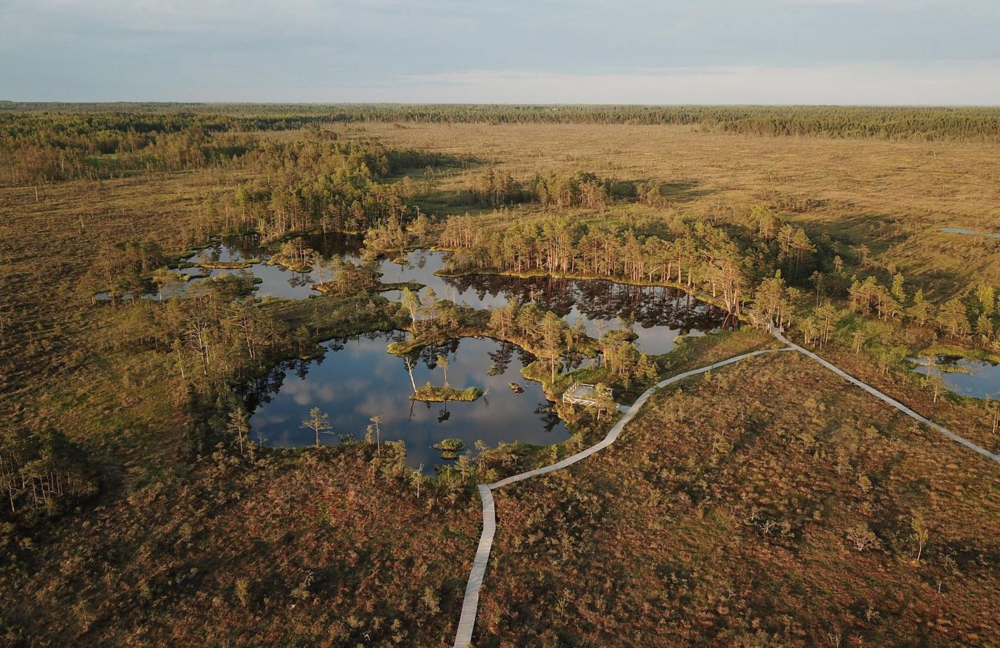
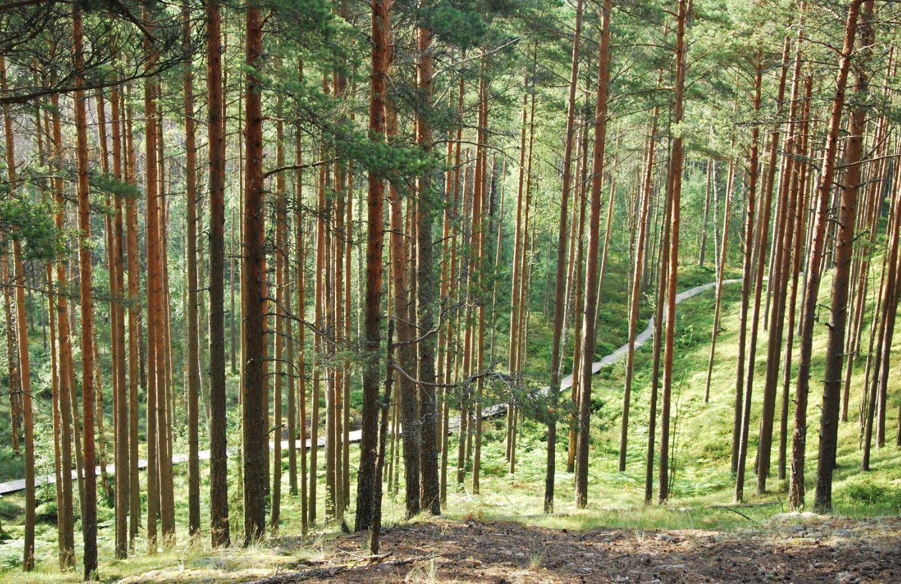

Eestimaa loodus on ainulaadne ja mitmekesine. Rabad ja sood on Eestimaa tõeline väärtus. Raba on maagiline ja ürgne koht, mis tekkis kuskil 8 000 aastat tagasi. Eesti maismaast on lausa 5,5% kaetud rabade ja soodega, turbamaadega aga 22%.
Raba on unikaalne ökosüsteem, kus valitsevad keskkonnaolud on püsiva elupaigana talutavad vaid vähestele taime- ja loomaliikidele.
Meie veerohked, ürgsed älve- ja laukarabad on Euroopas atraktiivsed loodusharuldused.
Raba ehk kõrgsoo on üksnes sademeist toituv soo, milles ladestub kasvav turbakiht. Rabale vastandub madalsoo, mille vesi pärineb sademetest ja põhjaveest. Maastik rabas on ühtlane ja vähese kõrguskõikuvusega. Mullastik on väheviljakas, niiske ja seal toimub aeglane lagunemine. See pakub elupaika mõningatele rabaloomadele ja taimeliikidele. Kuna üleliigne niiskus ei suuda ära auruda, siis maapind jääb vesiseks.
Tänu madalale mullaviljakusele kasvab rabas vähe puu- ja põõsaliike, kuid kõige levinumaks on harilik mänd. Raba põlendikel, servades ja läbivoolulistes osades võib leida ka sookaske. Harvem leidub kuuske ning veelgi harvem haaba, pihlakat, paakspuud, kadakat.
See imeline koht on elupaigaks paljudele rabaloomadele ja taimeliikidele. Taimeliikidest on kõige levinumad puhmas kanarbik, pohlad, mustikad, jõhvikad, rabamurakad, sookail ja paljud teised. Puurindelt on esindatud enamasti harilik mänd ja sookask, harvem leidub ka kuuske. Imetajatest võib rabas üsna sageli kohata põtra ja valgejänest, aga võib märgata ka hunti, rebast, mäkra, karu, metssiga, metskitse. Roomajatest leitakse kuivemates piirkondades arusisalikku, raba servaaladel võib vahetevahel sattuda rästikule või vaskussile. Kahepaikseid (rohukonn, rabakonn, veekonn) elab rohkesti laugastes ja rabaserva järvikutes ning rannikulähedastes rabades võib leida isegi looduskaitsealust juttselg-kärnkonna. Kalu on rabajärvedes vähe, peamine on ahven, harvem leidub haugi
Rabaturba kogumassist moodustab kuni 95% vesi. Rabamaastikul on palju erinevaid veekogusid – laukad, älved, jõed, ojad ja rabajärved. Laugaste sügavus võib ulatuda 4-5 meetrini, kuid enamasti jääb see siiski alla kahe meetri. Suuremate laugaste keskel võib olla laukasaari, mis on ümmargused või ovaalsed. Laukasaared võivad olla ujuvad. Suviti on väga värskendav kogemus käia laukas suplemas.
Matk rabasse on suurepärane viis luua oma igapäevasesse ellu vaheldust ja saada eemale linnamürast. Värskes ja puhtas õhus viibimine ergutab meeli ning aitab lõõgastuda. Paljud rabad on tehtud inimestele lihtsasti ligipääsetavaks laudteedega.
Siinkohal teemegi väikese ülevaate vähemtuntud rabadest, sest väga tuntud rabad on sageli ülerahvastatud.
Raja esimene osa on pinnasetee, mis kulgeb algul mööda kõrgepingeliini alust, seejärel üle heinamaa Marimetsa ojani ning edasi piki ojakallast teabetahvliga varustatud puhkekohani. Puhkekohast viib laudtee Marimetsa rabasse. Raja lõpus asub puitplatvormil 7,6 m kõrgune vaatetorn.
Marimetsa rabas näed nii madalsood, siirdesood kui ka kõrgsood, ka linnustik ja taimestik on rikkalik.
Raja pikkus edasi-tagasi kokku on 9 km, sellest laudtee pikkus on 2 x 2 km, aega varu 4-5h. Rada on kohati märg - ära unusta kummikuid. Rajal on kuivkäimla, pingid puhkamiseks, infotahvel kaardi ja raja skeemiga.
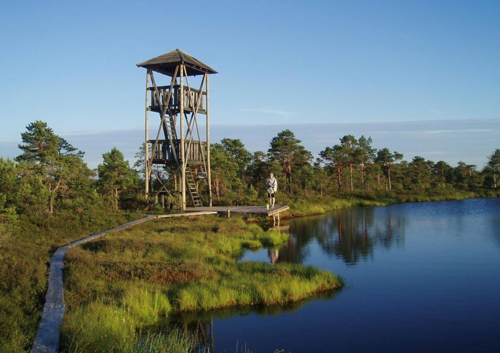
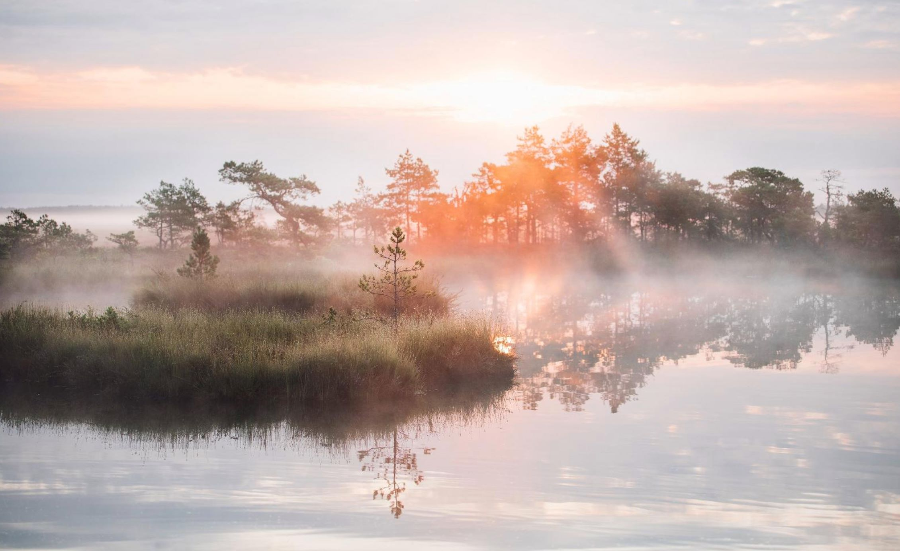
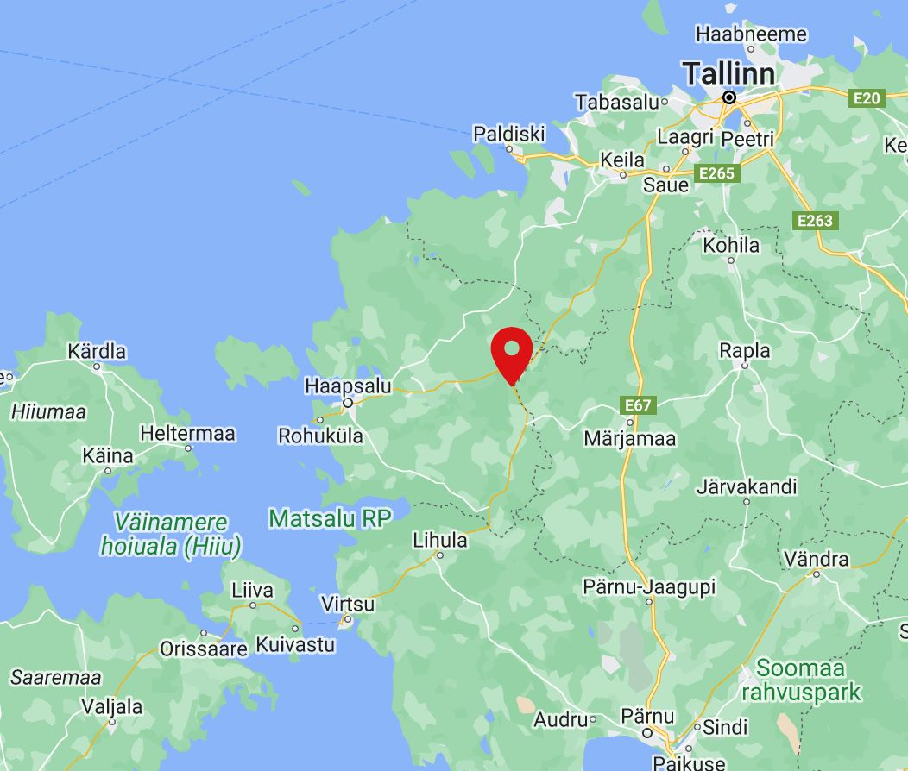
Eidapere lähedal asuv Mukri raba on tekkinud järve soostumisel umbes 10 000 – 9000 aastat tagasi ja seda peetakse Eesti üheks vanemaks sooks.
Rabasse viib laudtee, matkaraja pikkus on suurepärane ka lastega läbimiseks.
Rabas asuv Mukri järv on saarekeste ja vesiroosidega 2,2 hektari suurune veesilm. Kes tumedat vett ei pelga, see saab siin ujuda.
Rabamätastelt saab marju korjata. Raja peal asub ka 18 meetri kõrgune vaatetorn, kus saab imelise vaate kogu rabale. Kui laudtee liiga mugav tundub, saad soovi korral ka räätsamatkale minna.
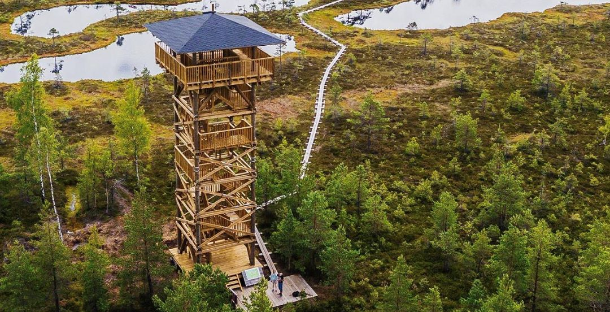
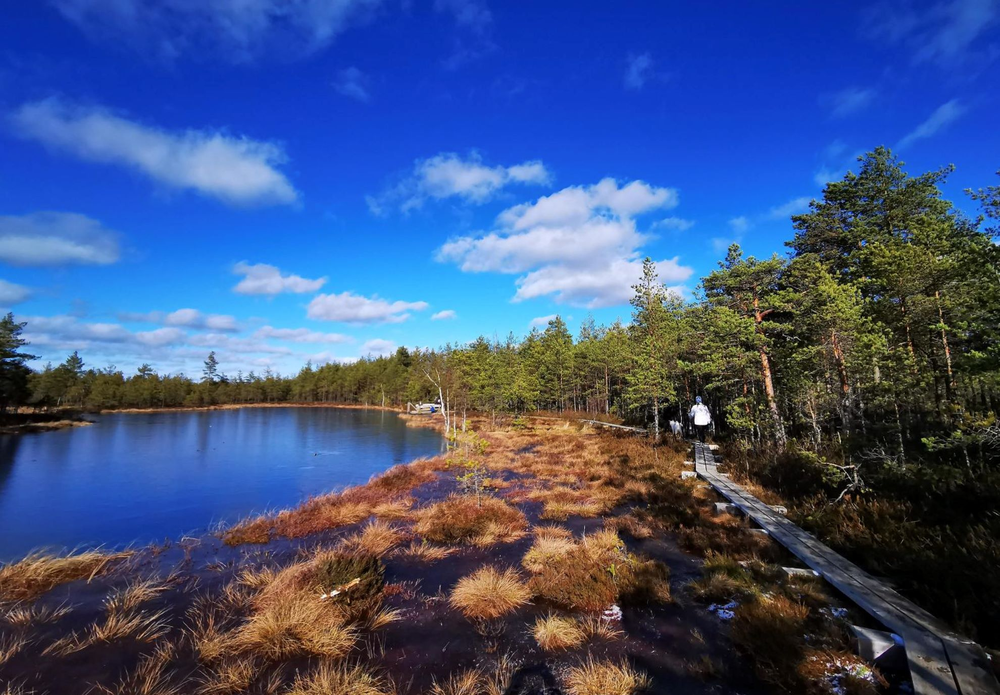
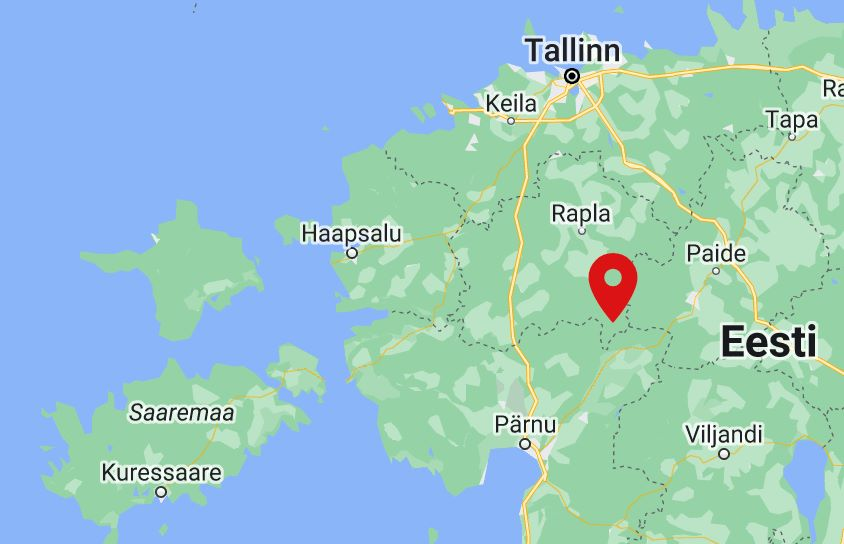
Tolkuse raba on Häädemeeste ja Häädemeeste valla maa-alal asuv kõrgsoo. Raba asub Tallinna–Pärnu–Ikla maantee ääres Häädemeestest umbes 6 km põhja pool. Rannametsa luited on alati olnud populaarseks matkamispaigaks. Luitemaa looduskaitseala paremaks tutvustamiseks on siia rajatud looduse õpperada ja paigaldatud infotahvlid. Osaliselt laudteel kulgev ringikujuline õpperada läbib nii luitemännikut kui Tolkuse raba ning viib raba suurima laukani. Rajale jääb mitmeid huvipunkte, rabajärvi ja puhkekohti.
Raja juurde jääva Eesti kõrgeima luite Tornimäe harjale on rajatud 18 m kõrgune vaatetorn, mille tipus avaneb suurepärane vaade Tolkuse rabale ja Pärnu lahele.


Nigula Looduskaitseala on loodud kaitsmaks 6400 ha ala, mis hõlmab endas puutumatuid soid, metsi ning niite. Siin kasvab palju jõhvikaid, mis on ka Nigula sümboliks.
Looduskaitseala südameks on Nigula raba oma viie põlismetsaga kaetud rabasaare ning suure rabajärvega.
Järve veerest algav 3 km pikkune õpperada (edasi-tagasi 6 km) kulgeb mööda lageraba kuni kõige suurema rabasaareni – Salupeaksini. Rajale jäävad vaatetorn ja ka madal platvorm, kust on hea jälgida rabaelanike toimetamisi.
Raba tekkis järve soostumisel, domineeriv on lageraba. Nigula soostikku ilmestavad soosaared ehk peaksid, mis on kunagiste järvede vahelise voorja künnise kõrgemad osad.
Raba lääneservas asub reliktjärvena Nigula järv. Õpperada kulgeb mööda lageraba kuni kõige suurema rabasaareni – Salupeaksini. Seal kasvav salumets on jäänuk soojast ja niiskest kliimast 5-6 tuhat aastat tagasi.
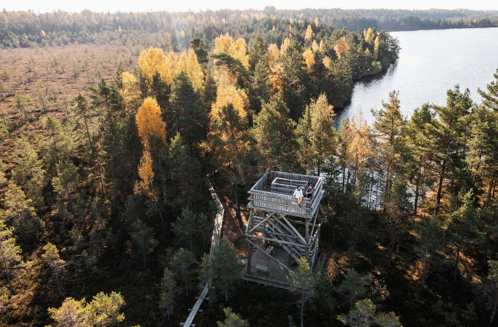
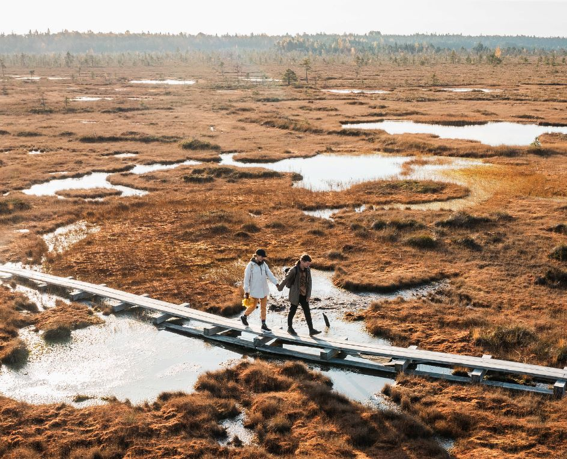
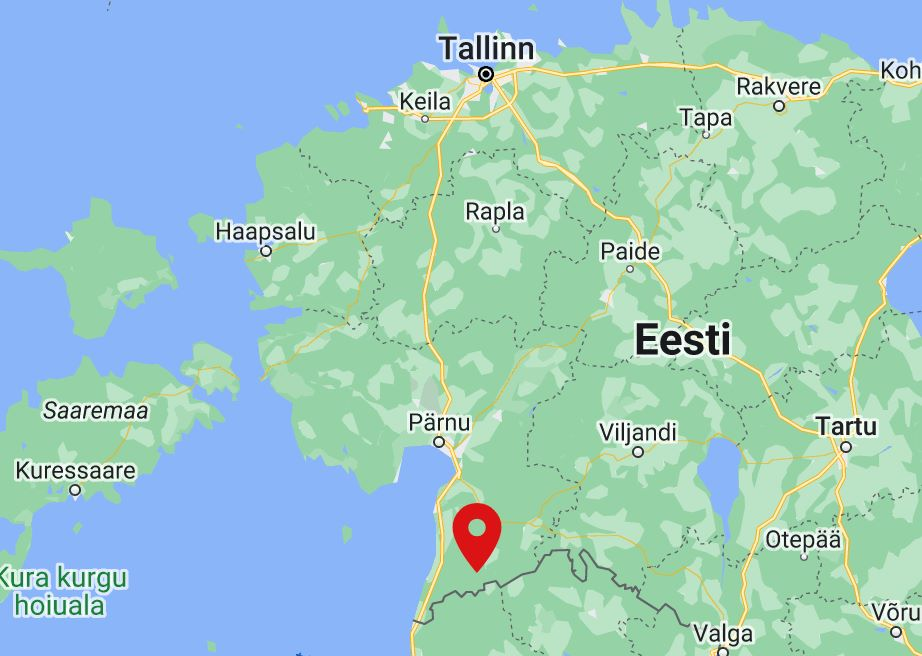
Jõesuu-Tõramaa tee äärest leiad viida, mis kutsub Sind laudteele maalilises Riisa rabas. Rajale jääb 8 puhkekohta ja vaatetorn. Autotee, parkla ja kuivkäimla paiknevad kohe raja värava juures.
Liikudes esmalt mööda rabaavarusi, põikab rada vahepeal põgusalt metsa alla. Sellistes kohtades näeb metsa üleminekut rabaks ja vastupidi – kuiv pinnas asendub märjaga, sootaimed põlise kuusemetsa omaga. Edasi loogeldes jõuab rada kaunite rabalaugaste vahele.
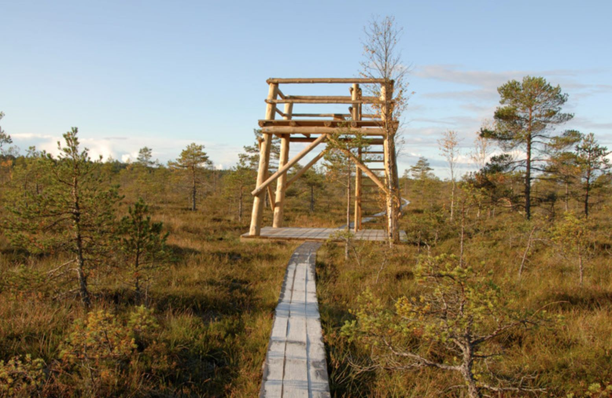
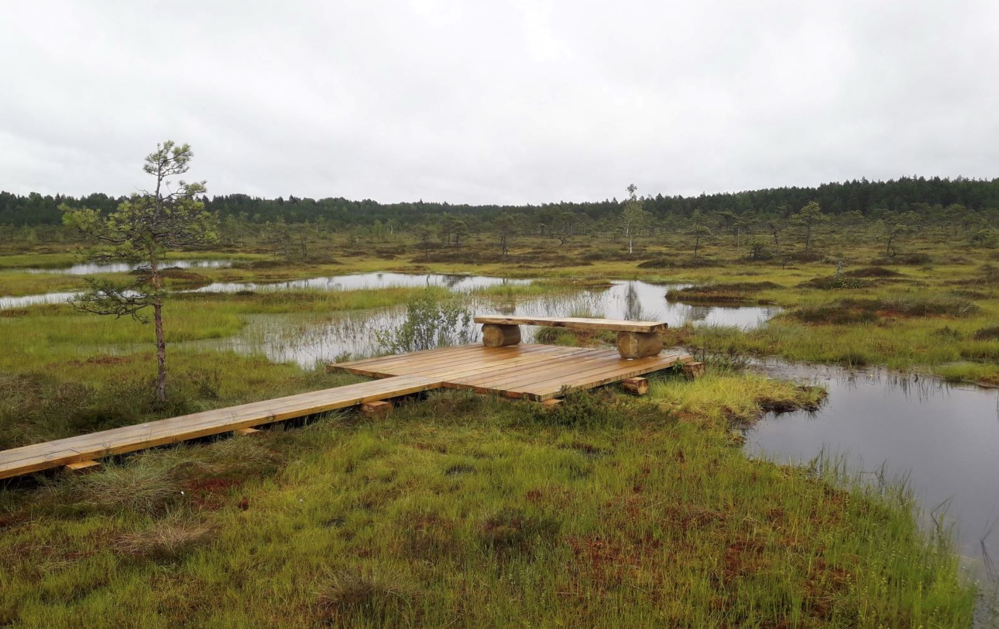
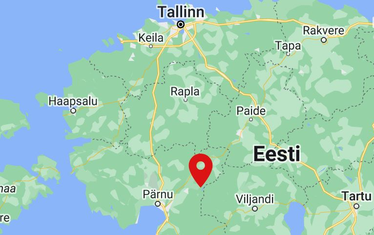